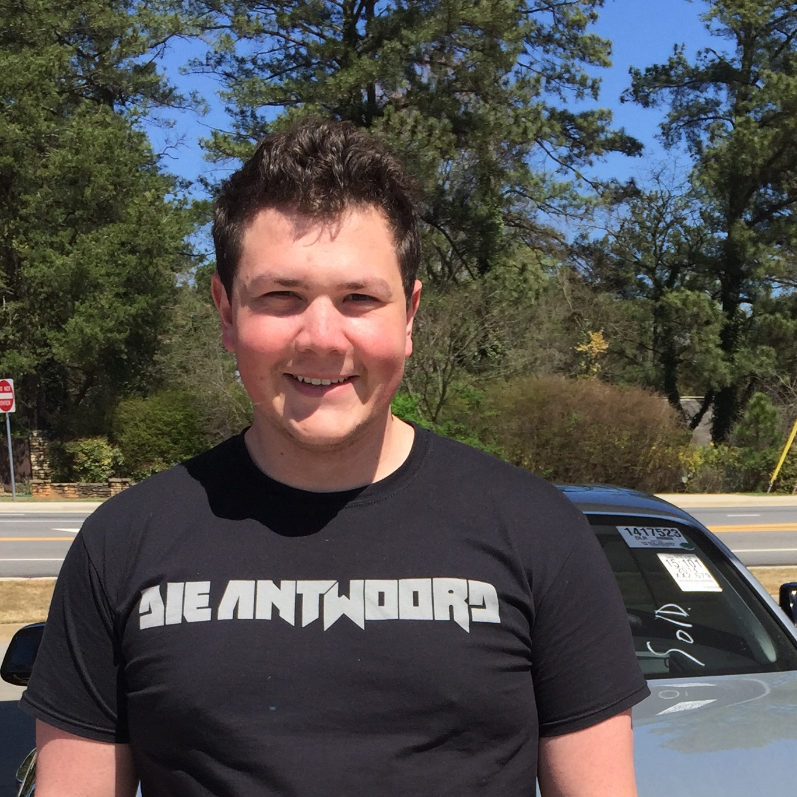

Kevin Flansburg
Data Scientist

Research Interests
Machine Learning
Rust
Real Time Data Pipelines
Dev Ops
Neural Networks, specifically:
Interpretability
Feature Extraction
Publications
Masters Thesis
A framework for Automated Management of Exploit Testing Environments
Advisor: Taesoo Kim
Committee: Manos Antonakakis, Duen Horng (Polo) Chau
Thanks: Yeongjin Jang, Insu Yun
[
pdf
]
Class Projects
CS8803 Building Secure Systems (Taesoo Kim)
Exploring Security Issues in Home Automation
Kevin Flansburg, Kenton Miller
[
pdf
]
ECE6262 Network Security (Manos Antonakakis)
Crawling for Lists of Malicious Domains
Kevin Flansburg, Kenton Miller, Harshit Chawla, Naissa Conde, Ryan Bahr, Michael Roberts, Prabhendu Pandey
[
pdf
]
ECE6255 Digital Processing of Speech Signals (Chin-Hui Lee)
Language Identification in Speech Recordings
Kevin Flansburg, Joshua Howard
[
pdf
]
CS7001 (Tucker Balch)
An Evaluation of LSTM-based RNNs for Predicting Stock Price Movement
Kevin Flansburg
[
pdf
]
Kevin Flansburg
Data Scientist